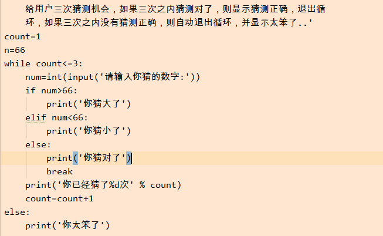

2019-09-14 11:09:50 学Python的第三天和写博客的第三天
本来第三天的内容前天就应该发的,但是因为有点难度,用了两天的时间去学习,按道也是昨天发,
因为中秋导致今天早上发,第三天学的Python内容是有关编码和基本数据类型,
基本数据类型中关于字符串的内容比较多,要记的也多,int比较简单,内容相对较少
有关逻辑的能力了还是弱,还得继续提高.加油!一定可以克服逻辑问题的,只有不断练习逻辑题,
逻辑能力才可以提高
第三天总结如下:
======我======是======一======条======快======乐======的======分======割======线
一.重要知识点
1. 基本数据类型的概述
int 整数
str 字符串, 存储少量的数据
bool 布尔
list 列表, ["大阳哥", "东阳哥", ]
tuple 元组. 只读列表, 不能改
dict 字典; 一对一对的存储数据. key:value {"赵阳":"大阳哥", 'jay':"周杰伦"}
set 集合. 存储不重复的内容
2. int, bool, str
int 方法操作:
bit_length() 求二进制长度
bool: 类型转换
1. 你想转换成什么. 就用什么把目标包裹起来
2. 带空的是False, 不带空的True
"" 空字符串表示False, " "非空字符串表示:True
空的东西都是False, 非空的东西都是True,None是空,即False
str
1. str索引和切片：
索引：起始下标是0(从左到右), (-)从右到左
切片: s[起始位置: 结束位置: 步长]
特点:顾头不顾尾
2. 字符串的常用操作: 常用方法
字符串不可变.
1. .upper() 全部转换成大写 # 在程序需要判断不区分大小写的时候. 肯定能用上
2. .strip() 去掉空格 #去掉括号内的内容,但是只能去掉左右两端的内容,中间的无法去掉
3. .replace('被替换的','替换的') 替换
4. .split() 切割
5. .format() 格式化输出
6. .count() 查找出现的次数
7. .startswith() 判断是否以xxx开头
8. .find() 查找. 找不到返回-1
9. len() 内置函数. 直接使用. 不用点操作 求字符串的长度
3. 迭代
for 变量 in 可迭代对象:
循环体
else:
二.错误总结
1.and、or
1、6 or 2>1 -->>True 6
2、3 or 2>1 -->>True 3
3、0 or 5<4 -->>False
4、5<4 or 3 -->>True 3
5、2>1 or 6 -->>True
6、3 and 2>1 -->>True
7、O and 3>1 -->>False 0
8、2>1 and 3 -->>True 3
9、3>1 and 0 -->>False 0
10、 3>1 and 2 or 2<3 and 3 and 4 or 3>2 -->>True 2
#出现这个错误的原因是没有理解and、or，掌握的还不够到位。
#解决后:and or 前面是数值,输出的也是数值,否则输出的是True或False
2.嵌套
n=66
num = int(input('请你输你你猜的数字:'))
while True:
# num=int(input('请你输你你猜的数字:'))
if num>n:
print('你猜大了')
elif num<n:
print('你猜小了')
else:
print('你猜对了')
break
#出现这个错误的原因是没有考虑到嵌套的关系,而且没有考虑到正常生活中猜错了都要再猜一次
解决方法:应该把num放进while语句的嵌套里
3.偷鸡
count=1
while count<=10:
if count==7:
count=count+1
#continue -->>一开始没有加continue
print(count)
count=count+1
#出现这个错误(也不能说是错误,因为程序是对的)是因为进行偷鸡了,然后虽然可以运行
但是以后学到数据库会出现错误,应该避免再有这种习惯
解决方法:加一个continue在if语句里
4.没有考虑到int、str的区别
count=1
while count<=3:
username=input('请输入你的用户名:')
password=input('请输入你的用户密码:')
if username=='Todd' and password=='123456':
print('登录成功')
else:
print('登录失败')
print('你还剩%d次输入机会' % 3-count) -->>应该把3-count用括号括起来(3-count)
count+=1
#出现这个错误的原因是没有考虑到int和str是有区别的,说明没有认真的去写程序
解决方法:加一个括号即可,======我======是======一======条======快======乐======的======分======割======线
练习
